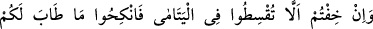
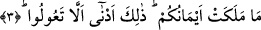

BİRDEN FAZLA
KADINLA EVLENMEK
3. Eğer (kendileriyle evlendiğiniz takdirde) yetimlerin haklarına riâyet
edememekten korkarsanız beğendiğiniz (veya size helâl olan) kadınlardan ikişer,
üçer, dörder alın. Haksızlık yapmaktan korkarsanız bir tane alın; yâhut da sahip
olduğunuz (cariyeler) ile yetinin. Bu, adâletten ayrılmamanız için en uygun olanıdır.
Âyette geçen “iksât”: adâletli davranmak demektir. “Şayet yetim kızlarla
evlendiğiniz taktirde onlar hakkında adaleti yerine getiremeyeceğinizden
korkarsanız.” ifadesindeki korkudan maksat bilmedir. Âdil hareket edememenin
korkulacak, hazer edilecek bir şey olduğunu bildirmek için “bilme”den “korkma” diye
söz edilmiştir. Bu ifâdenin gerçek mânâsı kastedilmemektedir.
Âyetin sebeb-i nüzûlü şudur: Araplar yanlarındaki yetimlerin kendilerine helal
olanlarıyla evlenirlerdi. Fakat onları arzuladıklarından değil, mallarına göz
diktiklerinden dolayı evlenirler; eşlik ve muâşerette onlara kötü davranırlar, ölmelerini
dört gözle beklerler, sonra da mîraslarına konarlardı.
Âyetteki yetimlerden maksadın velîsinin kucağında büyüyen, malını ve güzelliğini
arzuladığı, fakat kendi kadınlarına verdiğinden daha azını vererek nikahlamak istediği
yetim kızlar olduğu da söylenmiştir. Bu yüzden velîlerin, yetim kızların mehirlerini tam
olarak verme konusunda adil davranmadıkça bu kızlarla evlenmeleri yasaklanmış ve
onlardan başka kadınları nikahlamaları emredilmiştir.
Âyetin mânâsı şudur: “Yetimlerle evlendiğiniz zaman, iyi geçinmemek veya
mehirlerini az vermek sûretiyle haklarında adaletli davranmamaktan korkarsanız, “size
helal olan başka kadınlardan ikişer, üçer, dörder alın.” Herkes bu sayılardan
dilediğini seçmekte muhayyerdir. Yoksa bu sayıların bir kısmı bazılarına, diğer kısmı da
ötekilere âit demek değildir.
Buradaki kadınların, yetimlerden başka kadınlar olduğu sözün gelişinden
anlaşılmaktadır. Yâni, nefislerinizin hoşlandığı yetimlerin dışındaki kadınlardan alın,
demektir.
Yetimler hakkında korktuğunuz gibi mezkûr sayıların en azında da olsa, yâhut bu
sayılardan çok olduğunda âdil olmayacağınız gibi bu kadınların arasında da “âdil
davranamayacağınızdan korkarsanız, bir tane alın.” Bir taneden şaşmayın veya bir